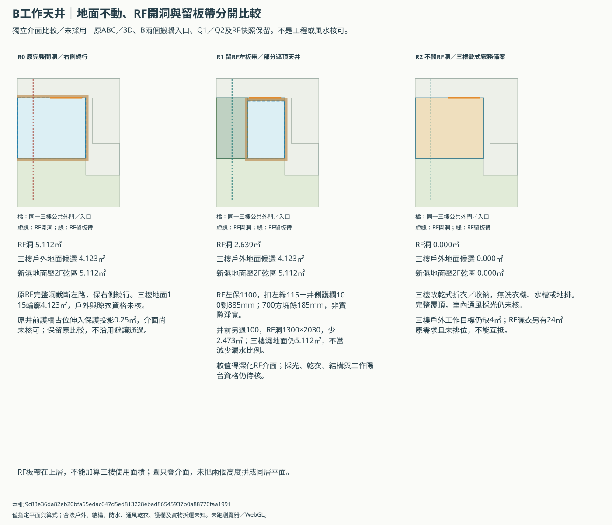
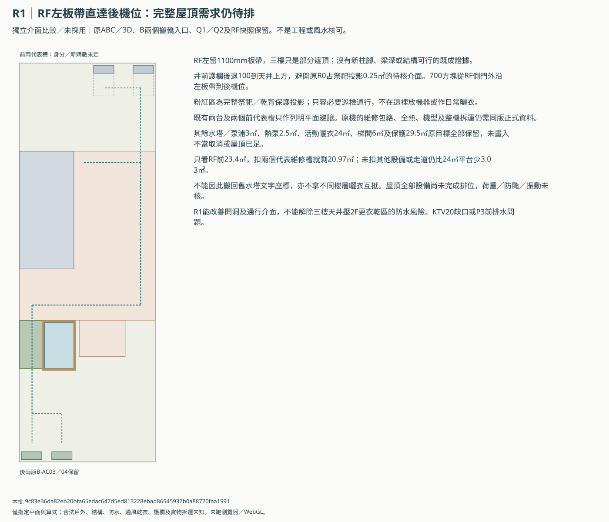
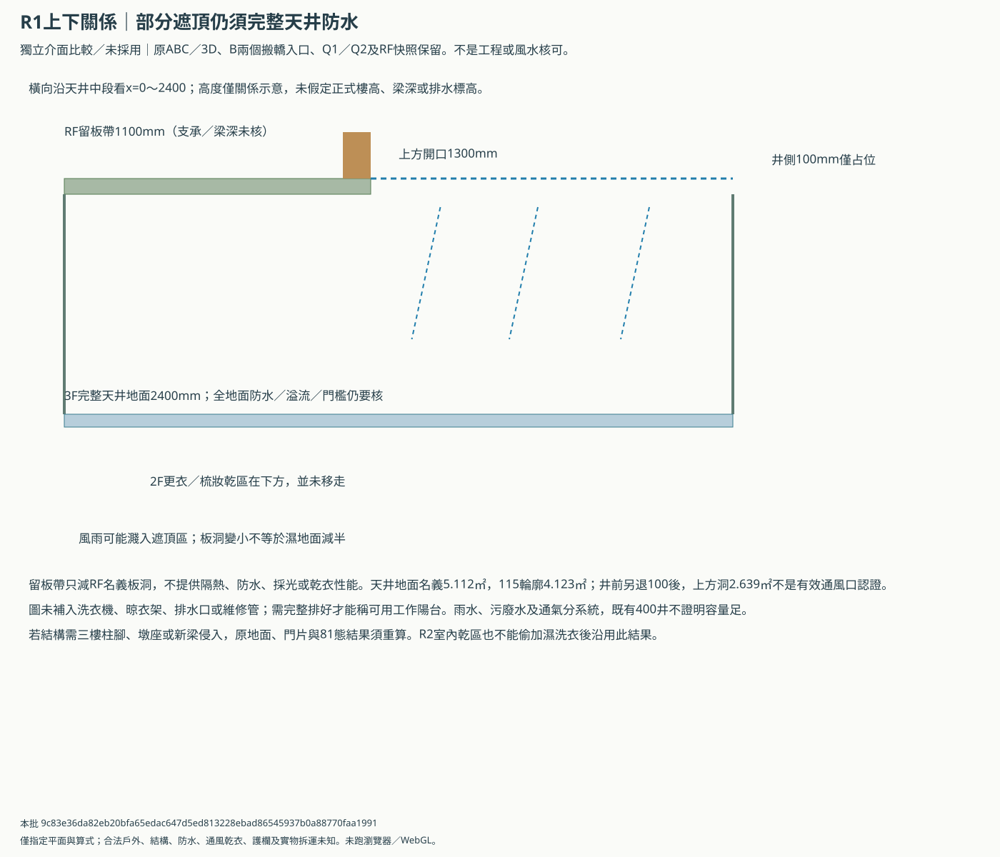

B工作天井與RF維修介面
獨立比較／未採用。R1優先深化介面，R0完整洞及R2乾式家務代價備案保留；不是取消三樓戶外工作陽台。原ABC／3D及搬轎版本不變。
先深化R1留板帶：減少RF開洞並保三樓客房、公衛和工作天井地面，不借縮房或改家規。天井仍在2F更衣乾區上方，開口變窄的採光／乾衣及結構尚未成立；R0保留，R2只作取消RF洞的完整代價備案，不改原工作陽台目標。
| 方案 | RF洞㎡ | 三樓戶外候選㎡ | 新濕地面壓2F乾區㎡ | RF左直路 |
|---|---|---|---|---|
| R0 原完整開洞／右側繞行 | 5.112 | 4.123 | 5.112 | 需繞行 |
| R1 留RF左板帶／部分遮頂天井 | 2.639 | 4.123 | 5.112 | 列明方塊可直達 |
| R2 不開RF洞／三樓乾式家務備案 | 0.000 | 0.000 | 0.000 | 列明方塊可直達 |
R1留1100mm板帶，扣115左緣與100護欄預算後885mm；井前護欄退回天井上方，避原R0占祭祀投影0.25㎡的待核介面。RF少開2.473㎡，三樓濕地面仍完整5.112㎡；不是費用或漏水風險減少48.38%。RF上方1300×2030開口的採光、乾衣及合法戶外未知。
三個介面與目標代價


R1 RF通行與未完成的全設備排位


上下關係：部分遮頂仍需完整防水


不直接換位置的原因
- 後右濕區樂觀輪廓6.133㎡，公衛5＋陽台4要9㎡；尚未新加隔間就短2.867㎡。
- 前KTV20＋戶外4要24㎡，前帶115基準只21.0159㎡；不默默縮KTV。
- 1700×3000瘦長天井雖有4.0719㎡，卻與原客房重疊1.479㎡並碰衣櫃；重切後客房115輪廓僅10.9440㎡，不能沿用原12.423㎡。
- 上述只針對固定二樓、梯核、祭祀保護與Q2前帶，並非所有整棟方案不可能。
原RF需求全部保留
| 需求 | 目標㎡ | 原下限㎡ | 完整排位／核可 |
|---|---|---|---|
| 梯間屋突 | 6.0 | 4.5 | 未知 |
| B 棟水塔／VF800 | 3.0 | 2.4 | 未知 |
| 熱泵熱水器區 | 2.5 | 2.0 | 未知 |
| 活動平台／曬衣棚架 | 24.0 | 10.0 | 未知 |
| 神桌上方無設備保護區 | 29.5 | 20.0 | 未知 |
前RF扣兩代表維修槽後樂觀餘20.97㎡，尚未扣其他機器與路線就比24㎡曬衣少3.03㎡。R2不能以「全部搬RF」稱原三樓目標已解。KTV19.2079㎡未達20、前量體新增10.647㎡、P3前排水缺口仍在。
條件到齊後依序回套
- R1保留RF左側1100mm板帶，井前另留100mm護欄占位；三樓天井地面、公共外門、客房、公衛、KTV與原尺寸不變。RF板帶不是三樓可用面積，也不在天井加畫已核柱腳。
- 1100扣左緣115及井側護欄100的平面預算剩885mm，對700方塊餘185mm；不是實際欄杆、法定維修寬或整機搬運核可。
- 開洞由5.112降為2.639㎡，僅降低名義RF開洞面積；不能據此換算工程費、降雨量或防水風險下降比例。原R0井前護欄占位伸入保護投影0.25㎡，不默認取得家規許可；R1將護欄退回天井上方。
- 天井仍以完整5.112㎡濕地面核算，仍在2F更衣／梳妝乾區上方；部分遮頂不消除防水、溢流、門檻或家規問題。
- R1上方直接開口只1300×2030mm，且樓高未定；採光、通風、乾衣、防雨及工作陽台資格未知，不能用開洞面積當有效開窗或可晾衣面積。
- RF留板帶的梁、支承、板洞邊補強、淨高、護欄、荷重與防颱須建築／結構核定；若需三樓柱腳或支撐，原門與方塊結果失效，應重排重算。
- 直達試線從RF側門外指定點起算；中段保護區僅作必要巡檢通行，不放設備、晾衣或日常活動。梯段、原門片、雨天防滑及實物拆運未核。
- R2無RF開洞，原天井改乾式家務／折衣收納，不畫洗衣機、水槽或地排；若日後要加濕設備，必須重新核上下濕區與排水，不沿用乾區結果。
- R2的三樓戶外工作陽台計0㎡；RF已有曬衣目標但未完成排位，不把不同樓層互抵，亦不視為屋主已同意取消原三樓4㎡目標。
- 所有版本仍缺RF水塔／泵浦、熱泵、完整活動曬衣平台與新風的實際包絡。兩個前代表槽不是新機數量；原B-AC03／04保位置，未稱屋頂全設備已裝得下。
- RF需求舊文字的座標已過時，數量及面積目標保留；保護投影以本輪凍結B研究為準，不把舊水塔座標搬回祭祀上方。
- R1只改善RF介面，不解決KTV100mm額外預算後19.2079㎡未達20、前量體新增10.647㎡，或P3二樓前排水缺口；所有原需求及備案保留。
options.csv／RF-requirements.csv／strip-width-sensitivity.csv／roof-routes.csv／engineering-replies.csv
本批 9c83e36da82eb20bfa65edac647d5ed813228ebad86545937b0a88770faa1991；沒有借用舊瀏覽器passed作本批驗收，專業核可未知。